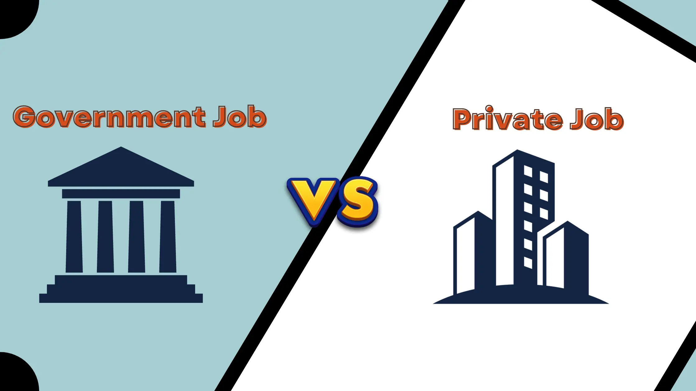

Introduction: Choosing between a government job and a private job is one of the most critical decisions in one’s career. Both types of jobs offer distinct advantages and disadvantages. Here, we’ll compare these two categories systematically across various factors that matter the most to employees.
1. Job Security
Government Jobs:
- Stability: Government jobs are known for their high job security. Once you're hired, it's hard to lose the job unless there's a serious infraction.
- No Layoffs: During economic downturns or recessions, government employees rarely face layoffs, making them more secure.
- Pension and Benefits: Government jobs often come with post-retirement benefits like pensions and health insurance.
Private Jobs:
- Career Progression with Risk: Private jobs offer more dynamic environments but often come with the risk of layoffs, especially during economic challenges.
- Performance-based Security: Your job security is often dependent on your performance and the company’s financial health.
- Frequent Changes: Companies in the private sector can downsize, merge, or restructure at any time, which affects job security.
2. Work-Life Balance

Government Jobs:
- Fixed Hours: Government jobs typically have fixed working hours, allowing for a balanced personal life.
- Holidays: A wide range of holidays, including national and festival holidays, are granted to employees.
- Paid Leave: Government employees enjoy extensive paid leaves and sick leaves, ensuring ample time for rest.
Private Jobs:
- Long Working Hours: In the private sector, especially in high-pressure industries, employees are often expected to work longer hours, sometimes even on weekends.
- Workload Variations: Private sector employees may face fluctuating work pressures, especially near deadlines or during major projects.
- Limited Holidays: While some private companies offer a good work-life balance, others may have fewer holidays and more stringent leave policies.
3. Salary and Growth Opportunities

Government Jobs:
- Salary Structure: Government jobs typically offer a standardized pay scale, with periodic increments and allowances based on seniority.
- Stable Growth: While the salary might not be as high as in the private sector, the **growth rate** is stable and predictable.
- Limited Opportunities: Advancement in government roles may take time, and there might be fewer opportunities for rapid promotions compared to the private sector.
Private Jobs:
- Competitive Salaries: Private sector companies often offer higher salaries and bonuses to attract top talent, especially in tech, finance, and management.
- Performance-based Growth: Employees in the private sector have more potential to **climb the ladder** quickly based on their performance.
- Skill Development: Private companies typically offer a more dynamic work environment with greater opportunities for skill development and **career advancement**.
4. Work Culture

Government Jobs:
- Conservative Work Environment: The culture in government jobs can be formal, with a focus on hierarchy and protocol.
- Limited Innovation: Government roles tend to be more structured and may have limited scope for creativity or innovation.
Private Jobs:
- Dynamic & Fast-paced: The private sector is typically fast-paced and encourages a **more informal and innovative culture**.
- Creativity & Flexibility: Employees often have more freedom to express ideas, innovate, and work flexibly.
5. Retirement Benefits

Government Jobs:
- Pension Plans: One of the biggest advantages of government jobs is the **pension plans** and financial security after retirement.
- Gratuity & Provident Fund: Along with pensions, government jobs come with **provident fund** contributions and gratuity benefits.
Private Jobs:
- Variable Retirement Benefits: Retirement benefits in private jobs depend on the company’s policies and might not be as robust as government pensions.
- Employee Provident Fund (EPF): Some private sector jobs provide an EPF scheme, but it is often **less generous** than government provisions.